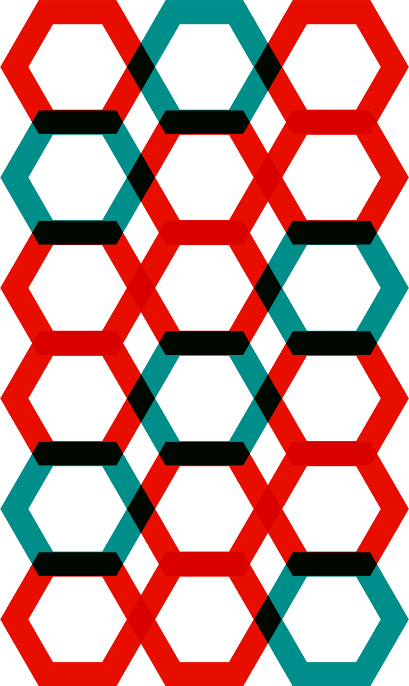

Our mission is to accelerate the uptake of personalized medicine.
Fueled by decentralized ledger technologies, OmicCoin aims to align the interests of different players in the healthcare ecosystem. Personalized medicine leveraging the blockchain has the potential to be one of the most dramatic healthcare innovations of our lifetimes.